SAFARI
Users
Genus Garcinia
Purple Mangosteen
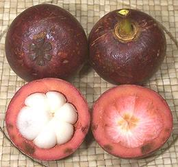 [Garcinia mangostana]
The Purple Mangosteen is a rather picky tropical tree which only grows well in a few locations in Southeast Asia and Central Africa, though a few are grown in Hawaii. The tree may grow to 80 feet under the right conditions but will be killed by temperatures above 100°F/38°C or below 40°F/4.5°C, and it's very fussy about soil as well.
The photo specimens were purchased in February 2008 soon after the ban on fresh mangosteens was lifted - provided they were fumigated or subjected to irradiation sufficient to kill Asian fruit fly. Previously they were only available frozen. These were about 2-3/4 inches diameter and weighed 5-1/8 ounces. Yield is about 33%, and at US $4.50/pound for whole fruit that made them quite expensive.
The fruit is of excellent flavor, sweet and tangy, and is eaten fresh from the shell cut (or more properly broken) as shown in the photo. Segments may or may not include a seed and the seeds are edible after boiling or roasting. The number of petals on the flower end of the fruit will be the same as the number of segments within.
Canned mangosteen is easily available in the U.S. but not considered as good because the flavor is quickly degraded by canning heat.
The purplish fruit has a thin brittle shell and a thick fibrous rind which is very high in pectin. A jelly is made from it after bitter elements have been leached out with salt. The red juice of the rind is a dye that's nearly impossible to remove from fabric.
Mangosteen rind has long been used in China and Southeast Asia as an
herbal medicine and now mangosteen juice (made from rind and pulp) is
heavily promoted in the U.S. through sophisticated "Network Marketing"
schemes. It sells for over US $1.00/ounce with implications it can relieve
everything up to and including cancer. Claims for it's benefits are
almost completely unconfirmed and it's extremely unlikely the juice can
deliver anything like the benefits implied. It is, however, making a huge
amount of money for its perpetrators (M2).
Kokum Phool
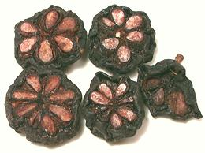 [Wild Mangosteen (English); Amsool, Aamsul, Bindin, Biran, Bhirand, Bhinda, Bhrinda, Brinda, Kokum, Kokam, Katambi, Panarpuli, Kudam Puli, Ratamba (India); Goraka (Sri Lanka); Garcinia indica]
Kokum is purple fruit used as a souring agent, usually in dried form, though a soft salt preserved form is common in India. It is common along the western coast of India where the tree is native, and takes the place tamarind fills elsewhere. It is used in other regions as well, particularly Sri Lanka and Malaysia where it is used in fish curries and is said to slow spoilage.
In general, whole pieces of the dried fruit rind are added to curries and similar dishes. It is also used, often in syrup form, to flavor summer beverages. The photo specimens, obtained from an Indian market in Los Angeles, were up to 1-1/8 inches in diameter.
Oil from the seeds remains solid at room temperature and is used for
confectionery, cosmetics and medicinals. Various parts of the fruit and
plant are used medicinally.
Details and Cooking.
Gummi-Gutta
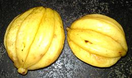 [Gambooge, Brindleberry, Malabar Tamarind, Asam fruit; Kujee Thekera (Assam); Vadakkan puli (northern tamarind), Kudam puli (pot tamarind), Citrin Fruit; Kodumpulli, Fish Tamarind (Kerala); Punampuli, Kudampuli (Kodava); Goraka (Sri Lanka); Garcinia gummi-gutta formerly Garcinia cambogia]
Native to Indonesia but now grown in other regions, this fruit, when mature, is orange or yellow with sutures, resembling a miniature pumpkin, though shape may vary. It is used as a souring agent in curries, particularly in Kerala, the far southwest coast of India. It grows at higher altitudes than Kokum, so is used by hill tribes like the Kodava. Like Kokum it is sold in both hard dried form and soft salt preserved form, and is more citrusy than Kokum. It is also used, especially by the Kodava (Coorg) people, to make a strong dark vinegar called Kaachambuli. Recipes calling for Gummi-Gutta may ask for "a few petals". The dried fruit splits along the sutures into these "petals". Details and Cooking.
Gummi-gutta is also now grown in south and central Africa. In the
West it was recently strongly hyped as a weight loss aid, but formal
studies have shown it no more effective than a placebo, and there is
some risk of liver toxicity.
Photo by Lalsinbox distributed under license Creative
Commons
Attribution-ShareAlike 3.0 Unported.
Gambooge
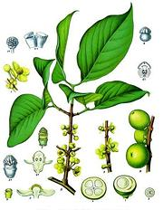 [Gambooge (English, India); Kujee Thekera (Assam); Makki (Tamil); Batuan (Philippine); Garcinia morella]
This fruit tree, to about 40 feet tall, is found in northeastern
India, Sri Lanka and the southern Philippines. Ripe fruit are very
acidic, so not often eaten fresh. It is dried, pickled, made into chutney
and otherwise preserved for use as a souring ingredient in lentil dishes.
Dried fruit is used in lentil curries also in sour fish curries in
Assam, in the far northeast of India.
Drawing by Franz Eugen Köhler in public domain -
copyright expired.
Indian Tamarind
 [Red Mango, Brindleberry (English); Korakkaipuli (Tamil); Kana goraka,
Honda goraka (Sinhala); Garcinia quaesita]
[Red Mango, Brindleberry (English); Korakkaipuli (Tamil); Kana goraka,
Honda goraka (Sinhala); Garcinia quaesita]
Found only in Sri Lanka, the fruit of this medium size tree (up to
65 feet) is small, yellow or purple to reddish, and with 7 to 12 deep
vertical grooves. It is mildly to moderately acidic and considered very
good for eating out of hand. It is also sold dried as a souring agent.
Photo borrowed from Anjali Exports of Sri Lanka under fair
use doctrine (small, non-commercial, non-damaging, otherwise
unavailable).
Asam Keping
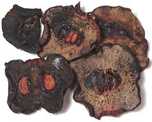 [Asam Gelugor, Asam Gulugo, Asam Keping (Malay); Garcinia atroviridis]
This yellow fruit, native to the rainforests of Malaysia and
Thailand, is too sour to eat fresh, but has long been used dried as a
flavoring in curries, and the like, particularly in Malaysia but
increasingly in Thailand. The photo specimens, purchased from a large
Indian market in Glendale, CA, were about 2-1/8 inches across.
Bar Thekera
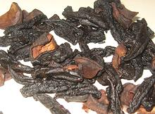 [Sukan Thekera; Garcinia pedunculata]
This broad leaf tree is native to Assam in the northeast of India and
parts of Burma (Myanmar). In Assam, this sour fruit is eaten fresh, but
more commonly it is sliced and sun dried for inclusion in sour fish
curry, vegetable dishes and in fried lentil cakes. The fruit is
between 3 and 5 inches diameter and contains seeds surrounded by juicy
edible arils.
Photo distributed under license Creative Commons
Attribution-ShareAlike 3.0 Unported.
Bacuparl
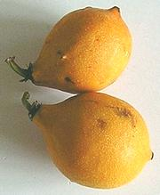 [Garcinia gardneriana]
Native to the Amazon Basin of South America, the edible arils of this
fruit are used in the region. It is also being studied as an agent in
fighting cancer.
Photo by Carolqk contributed to the public domain.
Achacha
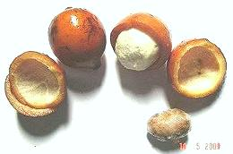 [Achachairú Garcinia humilis]
This fruit is grown primarily in Bolivia, but has recently been
planted commercially in Australia where there is an ongoing advertising
campaign to promote it. The nearly spherical orange fruits are up to
2-1/2 inches in length, and the arils have a bitter-sweet taste.
Photo by Joseani.neves distributed under license Creative
Commons
Attribution-ShareAlike 3.0 Unported.
African Mangosteen
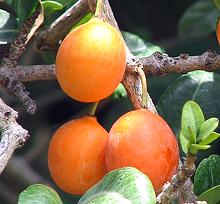 [Lowveld Mangosteen; Imbe; Garcinia livingstonei]
Native to a broad area of Africa from Somalia to South Africa,
this is a traditional food plant in the region. There and elsewhere it is
also grown as a decorative fruit tree. The taste of the aril surrounding
the single seed is pleasantly sweet-sour, but it contains a latex some
people dislike. The juice is used in beverages. The thin skinned orange
fruit is up to 1-5/8 inches diameter. This tree can be grown in southern
Florida (where the photo was taken) and is often made up as a male/female
graft so a single isolated tree will bear fruit.
Photo: any use is permitted provided Christopher Hind is
credited and his Flickr
Page is linked.
Lemon Drop Mangosteen
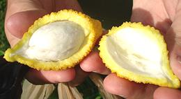 [Achacha (Australia); Charichuelo (Spanish); Achachairu (Portuguese); Garcinia madruno | Garcinia intermedia]
Native to Central and South America, the white arils of this fruit
have a sweet, citrusy taste. This tree can be grown in southern
Florida (where the photo was taken) and is being commercially grown in
Australia.
Photo by Chris Hind distributed under license Creative Commons
Attribution-ShareAlike 3.0 Unported.
Cherapu
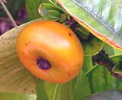 [Button Mangosteen; Garcinia prainiana]
Cultivated in Southeast Asia, this fruit has a very thin skin, making
it easy to eat fresh. Some have compared the flavor to a tangerine. This tree
can be grown in southern Florida (where the photo was taken).
Photo by Christopher Hind (CiXeL) contributed to the public
domain.
Genus Pakuri
Bacuri
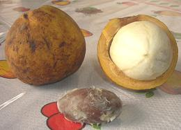 [Pakuri; Maniballi, Naranjillo, Bacurizeiro; Platonia insignis]
Native to tropical South America, this tree bears roughly spherical
fruit up to 5-1/2 inches in diameter. The aril has a sweet-sour taste and
is often used to make condiments and beverages. The oily seeds are used
medicinally to treat skin conditions.
Photo by Hellen Perrone contributed to the public domain.
Genus Allanblackia
Tallow Tree
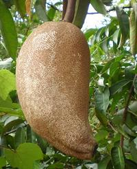 [Allanblackia floribunda]
Native to central Africa this tree is common in the rainforest understory. The large fruit is particularly important in Nigeria, where the seeds are gathered for cooking oil and soap making. It is also suitable for making margarine and other products requiring an oil that is solid at room temperature, and is now approved for use in the European Union. The slimy fruit pulp is sometimes made into jams and jellies.
Currently, the fruit is gathered wild, but efforts to cultivate the
trees commercially are in progress. Ripeness cannot be judged on the tree,
so fallen fruit is gathered from the ground. The fruit are up to 12
inches long and contain around 100 seeds in a translucent pulp. The oil
is about 50% stearic acid (saturated fat) and 45% Oleic acid
(monounsaturated fat). The government of Nigeria is working to
establish a commercial export industry based on this oil.
Photo by Scamperdale distributed under license Creative
Commons
Attribution-NonCommercial 2.0 Generic - obtained from the
Useful Tropical Plants
Database.
Mkimbo
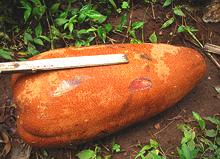 [Mkange, Mkanye, Mkimbo, Mshambo, Mwaka (Swahili); Allanblackia stuhlmannii]
Found only in Tanzania in central Africa, this tree is quite similar to the more widespread A. floribunda. The seeds are gathered in the wild for cooking oil and soap making. The oil is also suitable for making margarine and other products requiring an oil that is solid at room temperature.
Currently, the fruit is gathered wild, but efforts to cultivate the
trees commercially are in progress. The oil is about the same as that
of A. floribunda, which is 50% stearic acid (saturated fat) and
45% Oleic acid (monounsaturated fat).
Photo by Tanzania Plant Collaboration distributed under
license Creative Commons
Attribution-NonCommercial 2.0 Generic - obtained from the
Useful Tropical Plants
Database.
Links
- M1 - Mangosteen Info - Purdue University.
- M2 - Mangosteen & Health - Health & Beyond - Dr. Ralph Moss: A Friendly Skeptic Looks at Mangosteen.